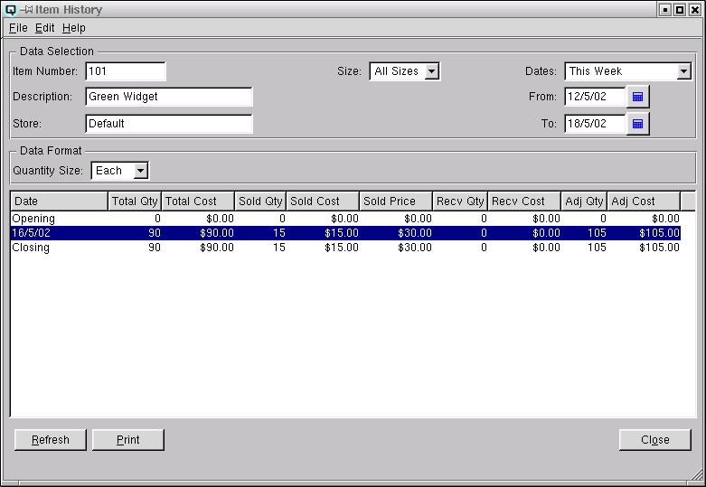

Item History

The item history window displays all increases or decreases in
an item's on hand or total value for a specified date range. View
daily sales, purchases and adjustments.
Data Selection
Enter and select the criteria for the data to view.
-
- Item Number - Enter the item number to view.
- Description - The description of the item.
- Store - The store to view. If left blank all stores will
be displayed.
- Size - Select the size to view. Note - where an item
is purchased in one size and sold in another size you need to select
"All Sizes" to get a true picture of all activity.
- Dates - Select a range of dates to view.
- From - The start date for the date range to view.
- To - The end date for the date range to view.
Data Format
Enter the format in which the data will be viewed.
-
- Quantity Size - Select the size format to view.
For example, if an item has two sizes (a
case of 12 and a single) and you have 24 single units on hand. If you
select "Case" as the display format the table will show a total quantity of
"2" on hand. If you choose to view the data in single units then the
display table will show a total quantity of "24" on hand.
Display Table
-
- Date - The date for which the totals are displayed.
- Total Qty - Displays the total quantity on hand as at the
opening date, the total quantity on hand as at the closing date, and
the net change in quantity for each date listed.
- Total Cost - Displays the total cost (value) of the item as at the
opening date, the total cost (value) of the item as at the closing date, and
the net change in cost (value) for each day displayed.
- Sold Qty - Displays the total quantity of items sold for the
date range and the total quantity of items sold for each day within
the date range.
- Sold Cost - Displays the total cost of the sold quantity
for the date range and the total cost of all items sold for each day
in the date range.
- Sold Price - Displays the total selling price of the sold
quantity for the date range and the total selling price of all items
sold for each day within the date range.
- Recv Qty - Displays the total quantity of all receivings
during the date range and the total quantity of receivings
for each day within the date range.
- Recv Cost - Displays the total cost of all receivings
during the date range and the total cost of receivings for each day
within the date range.
- Adj Qty - Displays the total quantity of all item adjustments for
the date range and the total adjustments for each day within the
range.
- Adj Cost - Displays the total cost of all item adjustments
for the date range and the total cost of adjustments for each day
within the date range.
Refresh
Clicking on refresh will refresh the data on the screen to match
the current selection criteria.
Print
Click on the "Print" button to print the detail to the printer.